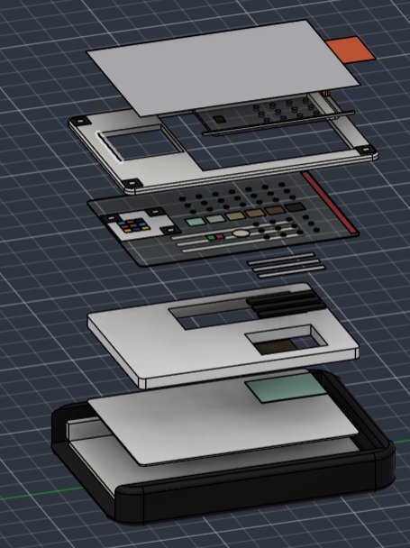
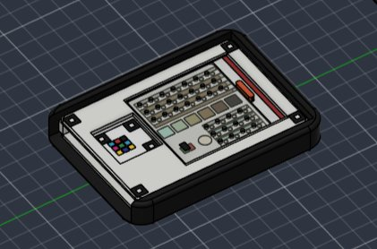
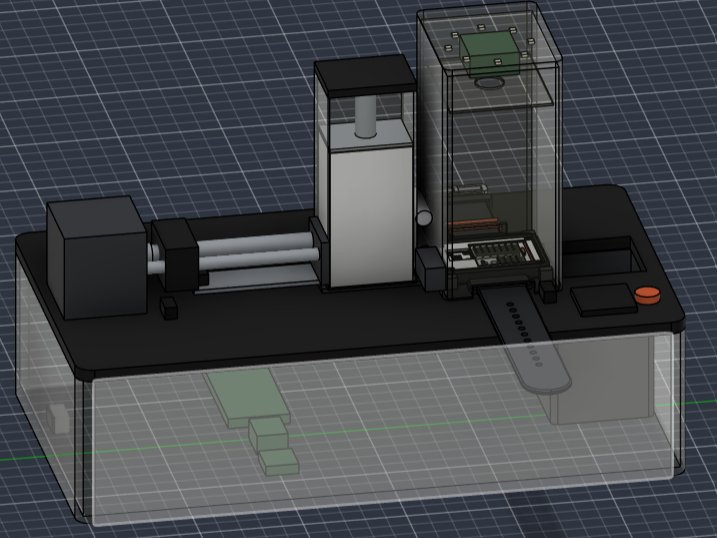
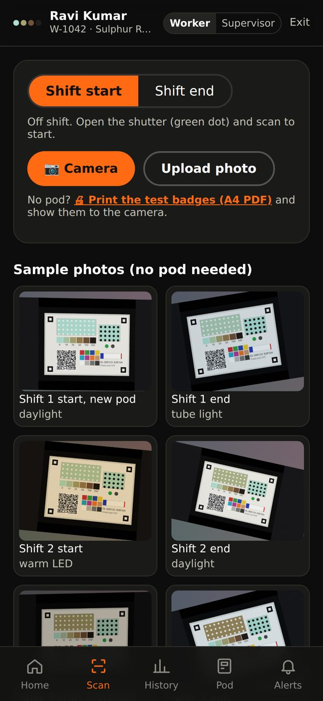
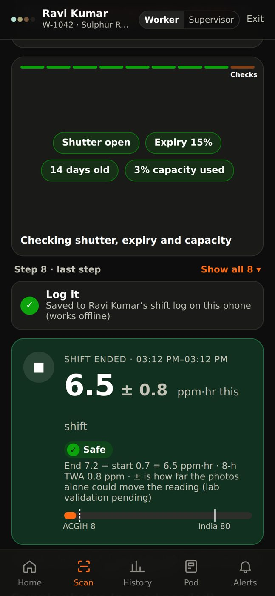
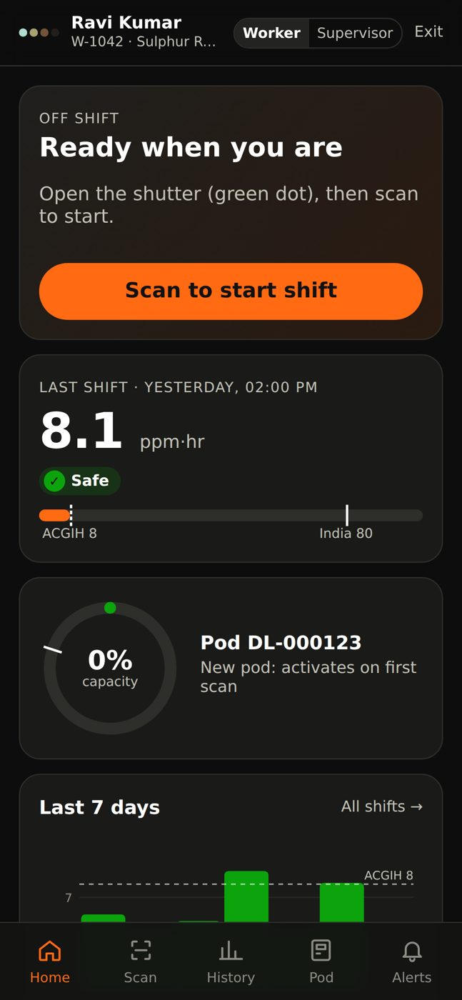
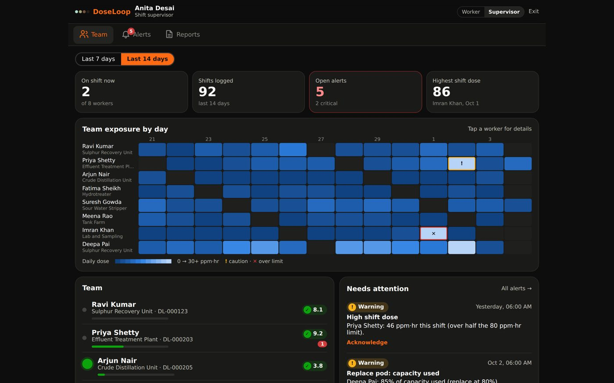

Team LoopHole · SIH 2026 · Problem statement SIH26118 (MRPL)
Every worker's H₂S dose, read from a card on the wrist.
DoseLoop is a reusable wristband that holds a one-time colour-changing sensor card. The worker scans it with a phone at the start and end of each shift, and the app logs that shift's hydrogen sulphide dose in ppm·hr. No battery, nothing to charge.
Exposure limits are a dose. Most workers never get one measured.
H₂S limits are written as an average over a shift, so what matters is the total a worker takes in, per shift and over months. A fixed gas alarm or a spot reading can't tell you that. Personal electronic monitors can, but at a cost that rules them out for every contract worker.
India, Factories Act: 10 ppm averaged over an 8-hour shift.
ACGIH (stricter, international): 1 ppm averaged over 8 hours. DoseLoop flags against both.
Typical shift average in field studies, even when short peaks pass 10 ppm. A spot reading misses the total.
| Electronic personal monitor | Single-use H₂S badge | DoseLoop | |
|---|---|---|---|
| Cost | ₹15,000–40,000 each, plus calibration gas | about ₹6,700 per worker per month | ₹15–35 per worker per month (estimate) |
| Power | Daily charging, bump tests | None | None on the worker |
| Per-shift dose record | Needs software and downloads | Read by eye, once | Logged every shift, with a ± range |
| Fake or reused sensor | n/a | Hard to tell | Signed QR + tear stripe, rejected by the app |
| Instant alarm | Yes | No | No. Works alongside existing gas alarms |
Two scans a shift. The difference is the dose.
The card keeps darkening as long as it is worn, so one card covers many shifts. A sliding shutter closes the air holes off-shift, and the app checks that nothing changed in between.
Open and scan
At shift start, slide the shutter open (green dot shows) and scan the card with any phone.
Work the shift
H₂S diffuses through 1.0 mm holes and a 2 mm air gap into the ink, which darkens with the dose.
Scan again
At shift end, scan again. The app shows the shift dose with a range, for example 6.5 ± 0.8 ppm·hr, Safe.
Close the shutter
Slide it closed (red dot). If the next start scan differs from this end scan, the app flags off-shift exposure.
Everything lasts a year except a 2.7 mm card.
Design v6 replaced the moulded pod with a flat laminated card, made on rolls like a medical test strip. It slides into a reusable frame on the band and pushes the old card out of the far end.
Inside the sensor card
Top (camera side) to bottom (skin side).
Peel foil keeps the card fresh until the dock strips it
Printed layer 6-step scale, colour QR, heat dot, shutter dots, tear stripe
Hole film clear PET, laser-cut 1.0 mm holes: 21 over the strip, 12 over the reference
PTFE membrane ribbons let gas in, block sweat, water and dust
Carbon/ZnO ribbons over the reference cell only: remove H₂S, let humidity through
2.0 mm PET spacer fixed air gap, so the dose maths holds
Copper acetate ink sensing lane (9 × 22 mm) and reference cell (9 × 12 mm)
Metallized white PET backing seals the skin side, white base for true colour


- Sensor card
- 28.6 × 40 × 2.7 mm, one-time
- Frame
- 32 × 46 × 5 mm, reusable, clear UV-blocking hole shutter (slides 1.5 mm)
- Cradle
- 38 × 52 × 7.3 mm, matte black antistatic PC/PA12
- Straps
- FKM (oil-proof), fits 130–200 mm wrists, 316L buckle and spring bars
- Safety
- Orange breakaway link, no batteries, no light metals
- Heat dot
- Wax-melt, turns dark for good above about 45 °C in storage
One dock at the gate changes cards for the whole shift.
The worker lays the band in the dock and closes the lid. The dock reads the old card one last time, peels a fresh one from a sealed magazine and pushes it in. Old cards drop into a sealed bin as dose evidence.

One card change, about 20 seconds (estimate)
- Band in the nest, lid closed. Motors run only when the lid switch confirms it is shut.
- The camera reads the old card a final time under fixed 5000 K light.
- A NEMA 17 stepper pushes the bottom card out of the 25-card magazine.
- A peel bar and pinch rollers strip its foil on the way.
- The new card pushes the old one out into the sealed bin.
- The camera reads the new card's QR, heat dot and reference cell, and links it to the worker.
Raspberry Pi Zero 2 W + Camera Module 3, about 160 × 295 × 200 mm. Prototype parts about ₹8,000–15,000.
A phone does the lab work.
The web app and Android app run the full scan pipeline on the phone, offline. Every step is shown on screen so a supervisor can see why a reading was accepted or rejected.
- Find the 4 corner markers and flatten the photo.
- Decode the QR and check its signature. Fakes are rejected.
- Sample each patch from many pixels; reject glare and clipping.
- Correct the colours using the printed browns and colour patches.
- Self-test on a held-out brown. Too far off means retake.
- Strip minus reference cell, read against the scale, gives ppm·hr with a ± range.
- Check shutter dots, heat dot, card age and capacity used.
- Log worker, shift, time, dose and card serial. Alert if over limit.




Screens are from the working prototype, which still uses the earlier word "pod" for the card.
"We don't trust the printer. We measure every roll, and the app uses the measured colours."
Printed colours vary with ink, paper and press speed, and phone cameras vary with light. Four layers keep the reading honest.
Measure, then encode
A spectrophotometer measures the real colour of each roll's printed scale. Those measured values go into the card's QR.
Reject bad prints
A camera checks every card on the roll. Cards more than about 2 ΔE from the roll average are thrown out.
Non-linear colour correction
The QR's colour modules plus the 6 browns correct the photo with a thin-plate-spline fit, not just white balance. Published work cut error from 90% to 14% this way.
Read it relative
Dose comes from strip minus reference cell, the same ink printed in the same pass, so thickness and humidity effects mostly cancel.
About ₹1 a shift.
The chemistry costs under 5 paise. Turning the one-time part from a moulded pod into a laminated card took it from ₹20–46 to ₹4–12. Rough estimates at about 10,000 units, not supplier quotes.
| Item | v5 pod design | v6 card design |
|---|---|---|
| One-time part | ₹20–46 per pod | ₹4–12 per card |
| Reusable band + frame (about 12 months) | ₹114–218 | ₹125–245 |
| Per worker per month | ₹30–65 | ₹15–35 |
| Card life | Fixed 30 days | On condition: 80% used or reference drift, maximum set by the lab |
| Dock (one per gate) | – | Prototype parts about ₹8,000–15,000 |
What's built, and what the lab still has to prove
All doses, costs and accuracy figures on this page are targets or demo data. Lab validation is pending.
Built
- Working web app with the full scan pipeline, worker and supervisor screens, and report export
- Android app, built automatically from the same code
- Printable test cards that the app reads from a real phone camera
- Parametric Fusion 360 model of the v6 band, card, frame and dock (the 3D model above)
Lab tests planned pending
- Dose calibration at 5+ levels from about 1 to 240 ppm·hr in a sealed chamber with certified H₂S gas. Target: within ±20% of a calibrated meter.
- Same dose, different paths: 2 ppm × 8 h must read the same as 16 ppm × 1 h.
- Detection limit about 1 ppm·hr; humidity, heat and shelf-life tests on the reference cell and heat dot.
Team LoopHole
Team lead
Product vision and pitchProblem and safety research
H₂S limits, DGMS/OISD rulesChemistry and sensing
Copper acetate ink, reference cellHardware design
Band, frame, card, dock in Fusion 360App and AI
Scan pipeline, colour correction, dashboardsCost, impact and research
Business model, referencesLinks
Live web app
dose-loop.vercel.appAndroid APK
Latest build, updated automaticallySource code
github.com/safafibm-ops/DoseLoopReferences
H₂S hazard, exposure limits and safety
[1] M. Elwood, "The Scientific Basis for Occupational Exposure Limits for Hydrogen Sulphide," IJERPH 18(6) 2866, 2021. doi
[2] Austigard, Smedbold, "H₂S Exposure Hazard Assessment," Ann. Work Expo. Health 66(1) 124–129, 2022. doi
[3] G. Stoppa et al., "Exposure to low levels of hydrogen sulphide and lung function (InVETTA)," PLOS ONE 18(11), 2023. doi
Passive diffusion dosimetry
[4] S. Venturi et al., "H₂S measurements by passive samplers and high-frequency analyzer," Applied Geochemistry 72, 2016. doi
[5] Kiwfo et al., "Smartphone-Based Color Evaluation of Passive Samplers for Gases: A Review," Atmosphere 15(4) 451, 2024. doi
[6] Pruthi, Dixit, "Wearable and sensor-based chemical dosimeters for occupational exposure," J. Public Health, 2026. doi
Copper-based colorimetric H₂S sensing
[7] L. Engel et al., "Screen-Printed Sensors for Colorimetric Detection of H₂S in Ambient Air," Sensors 19(5) 1182, 2019. doi
[8] C. Hong et al., "Colorimetric H₂S detection based on copper-MOFs and a smartphone," Anal. Methods 14(12), 2022. doi
[9] Shang et al., "Smartphone Imaging Device for H₂S Using Cu-Doped MOF Sensors," ACS AMI 16(24), 2024. doi
Smartphone colorimetry and colour correction
[10] Y. Fan et al., "Digital image colorimetry on smartphone for chemical analysis: A review," Measurement 171, 2021. doi
[11] P. Cebrián et al., "Smartphones Color Management for Chemical (Bio)Sensors," Biosensors 12(5) 341, 2022. doi
[12] ISO/CIE 11664-6:2022, CIEDE2000 colour-difference formula. iso.org
Colour QR and anti-fake cards
[13] I. Benito-Altamirano et al., "Reading Dye-Based Colorimetric Inks Using Color QR Codes," Chemosensors 12(12) 260, 2024. doi
[14] L. Engel et al., "Printed sensor labels for ammonia, formaldehyde and H₂S," Sens. Actuators B 330, 2021. doi
[15] ISO/IEC 23634:2022, JAB Code polychrome bar code. iso.org
[16] Josefsson, Liusvaara, "EdDSA," RFC 8032, IETF, 2017. rfc-editor.org
Marker alignment
[17] Garrido-Jurado et al., "Generation of fiducial marker dictionaries," Pattern Recognition 51, 2016. doi
[18] Romero-Ramirez et al., "Speeded up detection of squared fiducial markers," Image Vis. Comput. 76, 2018. doi
Wearability and skin contact
[19] Moon, Ju, "Wearable Sensors for Healthcare of Industrial Workers," Electronics 13(19) 3849, 2024. doi
[20] ISO 10993-10:2021, Tests for skin sensitization. iso.org